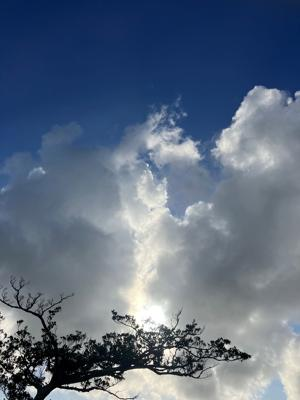
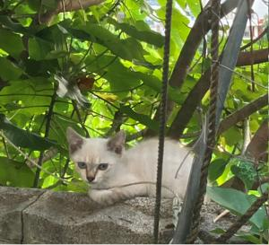
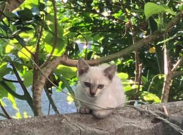

うるがいの話 ある日
最新: 白い子猫【うるがいの話 ある日】とは 一日だけのプログです
『うるがいの話』の最新一日だけのプログで、通信料が少なく経済的だ。カニの画像をクリックすると全ての日付が載る『うるがいの話』サイトを表示します
|
|
【うるがいの話】 うるがい(ｳﾙｶﾞｲ urugai)とは、『もずくがに』の名前でとても大きくなります。 |
|---|---|
|
|
【カミマヤーの話】 猫のことを方言でマヤーといいます。カミマヤー（kamimayaa）とは、神の猫のことです。 |
|
【たながぁの音楽】 たながぁ（ﾀﾅｶﾞｰ tanagaa）とは手長えびのことで、何種類かあり大きいのは車 エビぐらいになります。 |

|
【ぶながぁの話】 ぶながぁ(ﾌﾞﾅｶﾞｰ bunagaa)とは、赤い髪の毛、赤い身体、そして身長は１ｍ２０ｃｍ ぐらい、川の蟹を食べているの目撃された。場所は沖縄県国頭郡大宜味村のと ある村僕の隣近所に住んでいる爺さんから、聞いた話です。 |
|
|
【ギーマの話】 ギーマ(giima)とは、山原の里山に咲くスズランに似た、 花を付けます。実は食べられます、 気が付くと口の周りが紫になっています。 |
2023年07月09日 (日）白い子猫
15:10

早朝、体操をしていたら何やら視線を感じる。窓ガラスから外を眺めると白い
子猫が、ジーとこちらを見ていた。


オカ部長さんからです。
今、仕事の発注元として話を受けて
いるお友達が来沖するそうです。
「とある会社の会長が、７月９日日曜日に、那覇に来ます。
いつもの所で、六時なんとか、
出席してくれますかｍ（＿＿）ｍ」
出席可能ですか？
＞＞介護のごたごたで動けなくなりました
＞＞とうぶんはダメです。
わかりました。
＞＞あいすみません
大丈夫。 たんなる飲み会らしい。
＞＞あい
１５時０３分 ビットコインの総資産 ￥１２、４９７（↑１８）